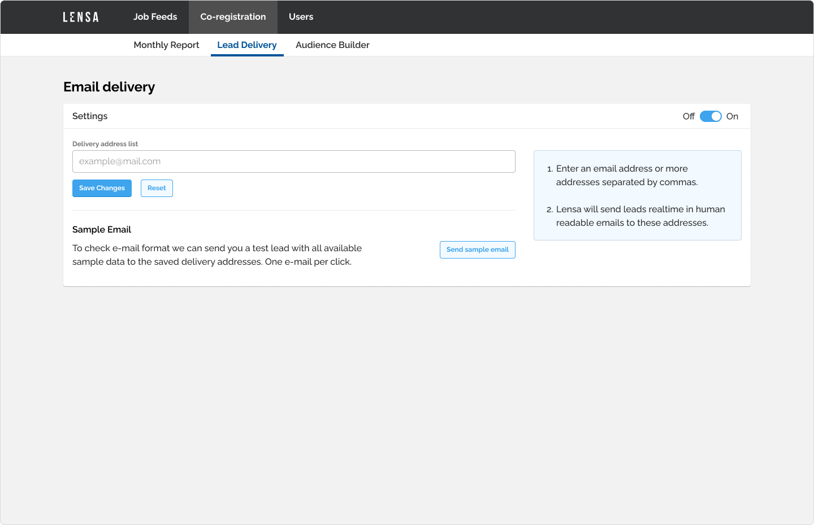
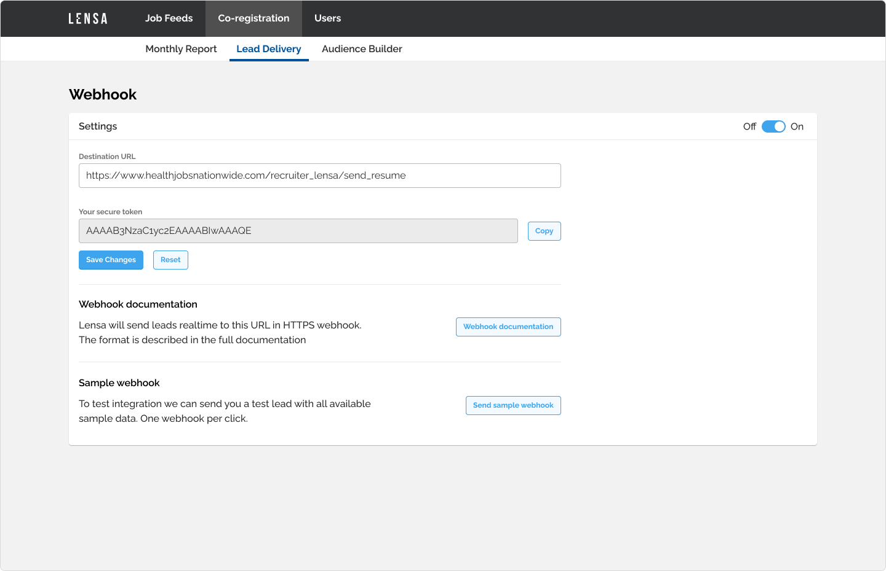
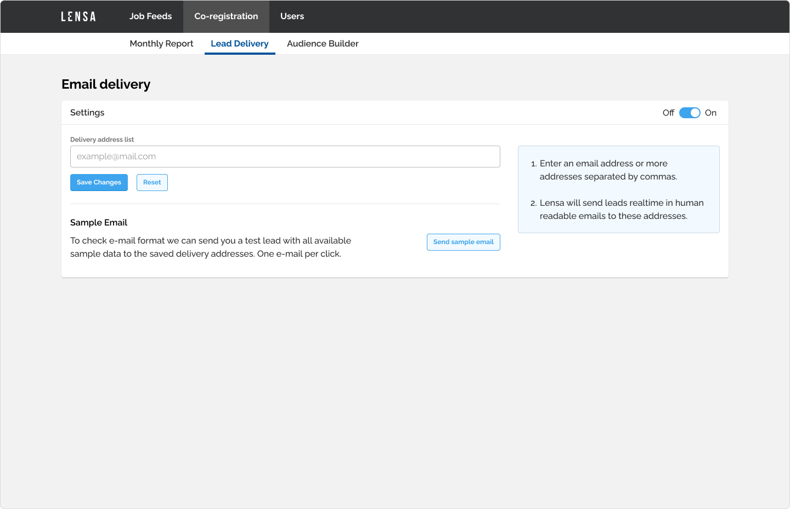
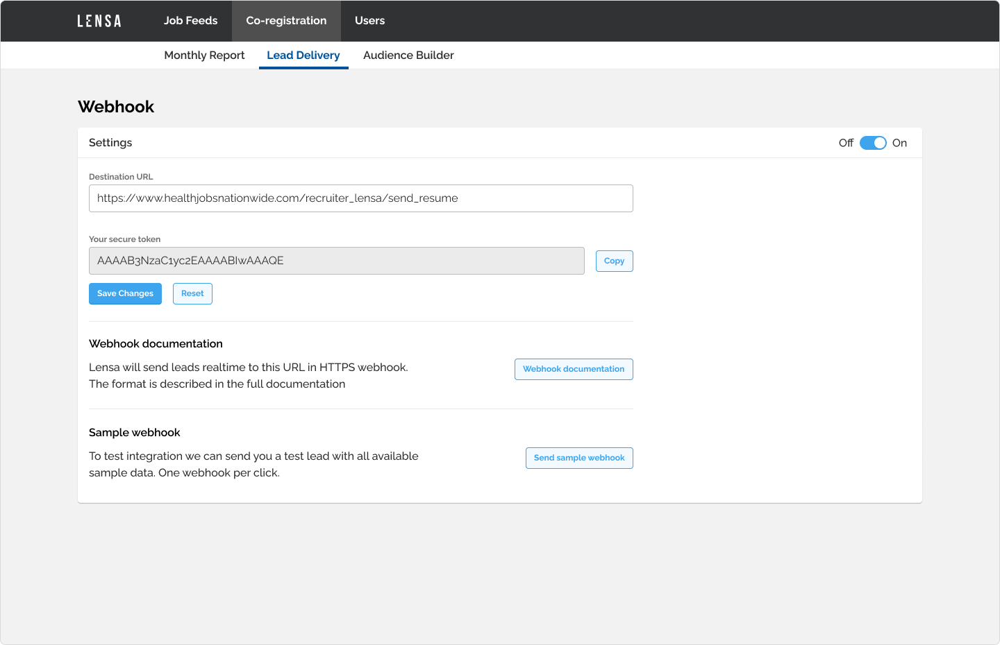
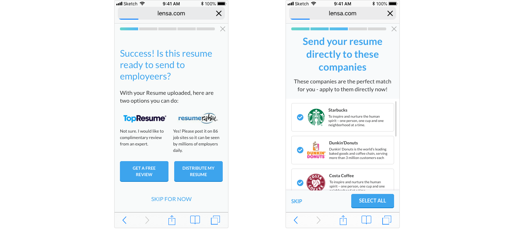
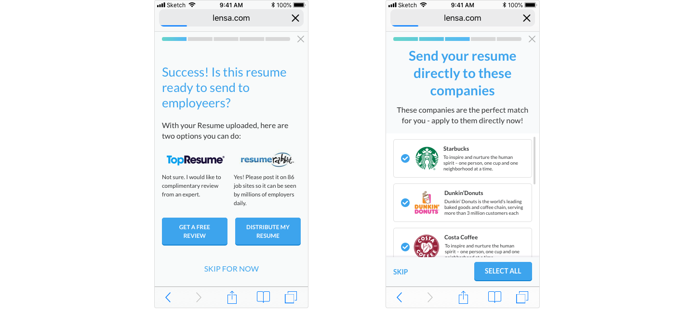

Lensa
Lensa empowering job seekers to make their best career decisions by building data-driven intelligence that supports their goals, skills, and needs. As a UX/UI designer at Lensa, my job was to design new features, create and maintain the design system.
Team
2 UX/UI designers, several development teams working mostly with front-end technologies.
Admin interface for partners
Problem
Lensa are selling leads for partners. Partners are currently managing leads via email with an account manager. They should have an admin interface where they could oversee their feeds.
Tasks
Create an admin interface where they can easily manage their feeds
Constraints
Data provided by the API
Conclusion
Partners could manage their feeds through the admin interface which drastically freed up time for the account managers.

 




Mobile onboarding flow
Problem
Our onboarding flow is old, outdated and not in sync with the company’snew brand.
Tasks
Create a new onboarding design for mobile.
Constraints
We should keep certain steps in order, can be affect the user negatively.
Conclusion
The new versions were performed lower than the older version by 2-3%.
Later on we managed to optimize the screens and improved the conversion rate compared to the original versions.


 


Company page
Problem
Job seekers had to browse elsewhere if they wanted to find out more
about a given company. By providing info about the company we could
increase their time on the site.
Tasks
Create a view where the job seekers could view info about a given company.
Constraints
Fragmented info about companies, have to deal with empty data
Conclusion
The dataset was a bit limited, later on we had more data to display,had to change the layout.
Data tables on mobile are challenging.